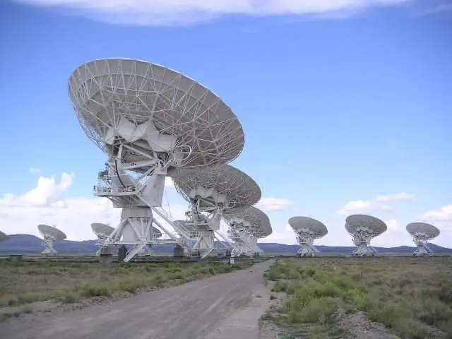
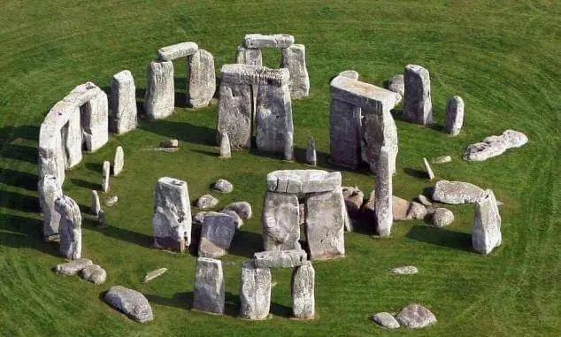
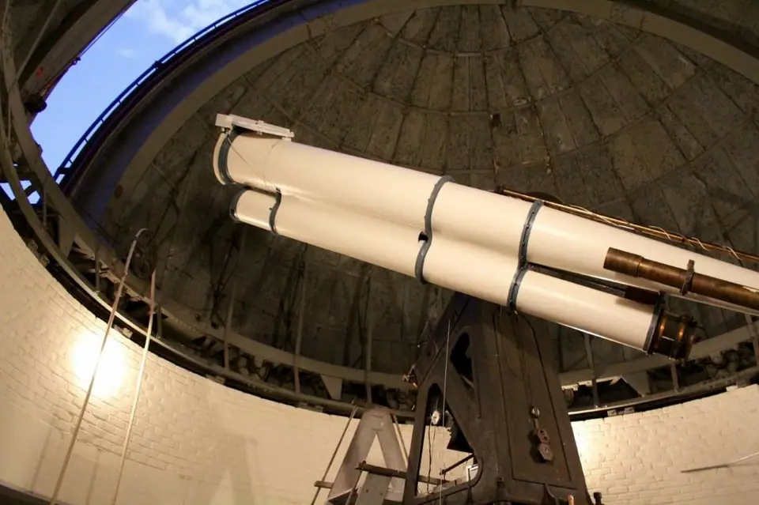

Science news ·
Our view of the universe
Mohammed Raihan: the Sun, the Moon and the five bright planets were all our ancestors could see, wandering against the bright stars of the night sky.
This post is in Arabic; the title and summary above are translated. The original text follows.
بقلم: محمد ريحان
الشمس والقمر والكواكب الخمسة اللامعة هي كل ما كان يراه أجدادنا الذين سكنوا الأرض منذ آلاف السنين، وكانت هذه الأجرام دائمة التجوال أمام خلفية النجوم البرّاقة في سماء الليل الحالك، ولم يخطر ببال أحدهم أن كل ما يرونه من أجرام سماوية على الرغم من كثرتها لا تشكّل سوى جزء لا يذكر من عظمة الكون واتساعه، فكان الكون بالنسبة لهم مجرد تلك القبة السماوية الغامضة التي تحيط بالأفق من كل الاتجاهات. ولم يكن لشيء أن يغير من هذه النظرة الضيقة لكوننا، والتي توارثتها الأجيال المتعاقبة على هذا الكوكب سوى اختراع عبقري، إنه التلسكوب.



بدأت القصة من هولندا في مطلع القرن السابع عشر، عندما توصّل صانع نظارات يُدعى هانز ليبرشي إلى اكتشاف مهم، فإذا وضعت عدستين إحداهما محدبة والأخرى مقعرة فإن من شأن هذا التركيب أن يكبر صور الأجسام البعيدة، وبطبيعة الحال فقد انتشر هذا الاختراع بسرعة كبيرة في كل أنحاء أوروبا حتى وصل إلى إيطاليا وبالتحديد إلى مدينة بادوفا حيث كان غاليليو غاليلي يُدرّس الرياضيات هناك، والذي صنع لنفسه تلسكوباً بسيطا بعد أن أدخل عليه بعض التعديلات، وبدلا من أن ينشغل بمراقبة الأجسام على الأرض توجه بتلسكوبه إلى السماء، فماذا وجد؟
من خلال تلسكوبه الشهير رأى غاليليو فوهات القمر والبقع الشمسية وأقمار المشتري وحلقات زحل وأوجه الزُّهرة، ولكن الأهم من ذلك كله أنه اكتشف أن تلك السحابة الضبابية التي تدعى بدرب التبانة تتألف من ملايين النجوم الخافتة التي ما كانت لتُرى لولا استخدام التلسكوب، وهنا فقط بدأ المنعطف الأقوى في تاريخ علم الفلك، وبدأت خطوات الإنسان الأولى في كشف اللّثام عن غرائب الكون وأسراره التي لم تكن لتخطر على بال الإنسان الأول، فمحتويات الكون هي أكثر من التي نراها ولا يزال الكثير على الإنسان اكتشافه.
بعد ذلك بنصف قرن يأتي العبقري إسحق نيوتن فيستبدل العدسة الشيئية للتلسكوب الكاسر بمرآة مقعرة، وبذلك تخلص من أغلب عيوب التلسكوب الكاسر، وأصبح بالإمكان صناعة تلسكوبات أكبر حجماً مما يمكننا من جمع مقدار أكبر من الضوء ورؤية أجرام أشد خفوتاً من ذي قبل. وقد استفاد الموسيقار والفلكي الشهير وليام هيرشل من التلسكوب العاكس أعظم إفادة، وأخذ يطوّر صناعة التلسكوبات العاكسة بأحجام كبيرة، وأخذ يجوب بها أرجاء السماء ليكتشف عشرات النجوم الثنائية والعناقيد النجمية والسّدم وغيرها، وكان من ضمن تلك الاكتشافات اكتشاف الكوكب السابع في نظامنا الشمسي كوكب أورانوس الذي لولا التلسكوب لبقي مجهولاً وبعيدا عن مرأى البشر إلى يوم يبعثون.
بفضل التلسكوبات الكبيرة ازداد مدى قدرة الفلكيين على سبر أغوار الكون ومع منتصف القرن التاسع عشر بدأ درب الاستكشاف هذا يدخل منعطفا هاماً، فلم تعد الدراسة الفلكية مقتصرة على مشاهدات الراصد فقط، بل تعدّتها إلى تسجيل تلك المشاهدات على فيلم فوتوغرافي لدراستها لاحقا، إضافة إلى إمكانية تحليل الضوء القادم من النجوم باستخدام المِطياف الذي مكّن الفلكيين من معرفة التركيب الكيميائي للنجوم وتصنيفها والكشف عن النجوم الثنائية المتقاربة من بعضها البعض، ولم ينقضِ القرن التاسع عشر حتى أصبح المِطياف أداة قادرة، لا تقل أهمية عن التلسكوب، نظرا لغزارة المعلومات التي يمكن استخلاصها من دراسة الأطياف النجمية والسديمية، وتطورت معها أدوات ملحقة أخرى بالتلسكوبات مثل الميكروميتر الذي استخدم لقياس الزوايا بين الأجرام السماوية بدقة متناهية، والمثير في الأمر أنه كلما تطورت هذه الأدوات بدا لنا الكون أكثر اتساعا. مع بداية القرن العشرين بدأ التساؤل حول ماهيَة السّدم البعيدة – أي المجرّات الأخرى – وهل هي سحبٌ من الغاز والغبار الكوني تقع في أطراف مجرتنا، أم هي حشود نجمية تحتوي مئات المليارات من النجوم على غرار مجرتنا درب التبانة وتفصلنا عنها مسافات هائلة وتتحرك مبتعدة عنّا بسرعات خيالية!
ومرةً أخرى يتدخل الثنائي الخطير – التلسكوب والمِطياف الملحق به – للإجابة على هذا السؤال، مدعّما هذه المرة بنظرية حديثة تصف الكون والجاذبية الكونية، هي نظرية النسبية العامة لآينشتين التي وصفت الكون على أنه في تمدد مستمر، وقد جاءت نتائج الرّصد الفعلي الذي كان من ألمع رواده الفلكي الشهير إدوين هابل مؤيدة للنظرية بشكل كبير، ومن هنا بدأ الحديث عن نشأة الكون وعمره الزمني، وأصبحت لدى المجتمع العلمي فكرة مقبولة عن تاريخ كوننا وهو ما يعرف بنظرية الانفجار العظيم، وأصبح بمقدور العلم ولأول مرة التصدي لمسألة شائكةٍ كهذه.
خلال العقود التالية من القرن العشرين بدأت تقنيات دراسة الأجرام السماوية بمختلف الحزم الطيفية للإشعاع الكهرومغناطيسي تتطور بشكل مطّرد، فأصبح بمقدور الفلكيين تصوير مختلف تلك الأجرام بالأشعة تحت الحمراء والأشعة فوق البنفسجية والأشعة السينية، إضافة إلى التلسكوبات الراديوية العملاقة التي أصبحت أهم أداة لدراسة المجرات البعيدة واختبار النظريات الكونية، والصدى الإشعاعي للانفجار الكوني العظيم.
وقبل نهاية القرن العشرين أُطلق إلى الفضاء التلسكوب الفضائي هابل ليدور حول الأرض في مدار ارتفاعه ستمئة كيلومتر عن سطحها، وقد فتح هذا التلسكوب آفاقا واسعة واكتشف ظواهر كونية لم تخطر ببال أحد، والتقط آلاف الصور لمجاهل الكون بالطيف المرئي ودون الأحمر وفوق البنفسجي، ويعتبر باكورة التلسكوبات الفضائية التي بدأ الاستعداد لإطلاقها تباعاً مع بدايات القرن الحادي والعشرين، الذي استُهلّ بالكشف لأول مرة عن أمواج الجاذبية التي تنبأت بها نظرية النسبية العامة قبل ذلك بقرن كامل، وأصبح بالإمكان ولأول مرة في تاريخ البشر أن يرصدوا الكون من خلال أمواج غير الأمواج الكهرومغناطيسية، التي شكلت أساس علمنا بالكون وإدراكنا له على مدار آلاف من السنين، إنها خطوات عملاقة على طريق البحث في المجهول الأعظم، الكون، ولإشباع تعطش البشرية الدائم نحو المعرفة والتساؤل. وبالرغم من كل هذا التقدم الذي يعتبر مفخرة للجنس البشري، إلا أنه لا يغني عن منظر السماء المرصعة بالنجوم خلال أمسية في ليلة صافية غير مقمرة بعيداً عن المدن وتلوثها الضوئي المزعج، الذي أفقدنا متعة النظر إلى السماء، وحرمنا من فرصة التطلّع عاليا كل ليلة لنرى المشهد ذاته الذي كان بمثابة الشرارة الأولى لبداية مغامرة البشرية العظمى وتغيير نظرتهم للكون.
Migrated from the AUASS website archive as published, with the formatting tidied.